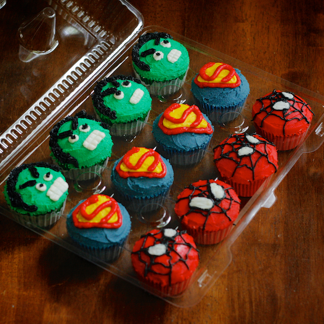

Stellar Cupcakes
Picking my favorite cupcakes is easy since I've only made two batches so far. Nevertheless, these superhero cupcakes were pretty amazing. The Hulk, Spiderman, and Superman logo were fun to make because I'd never done anything like this before. I liked the challenge. Fun fact: there is a special Oreo buttercream icing under the superhero decorations!

I made mustache cupcakes for Fathers Day. They were so tasty! I like this recipe because it's so customizable. Cupcakes can be vanilla, chocolate, strawberry, oreo, or really any flavor. The icing is chocolate for the mustache and vanilla buttercream for the white background.